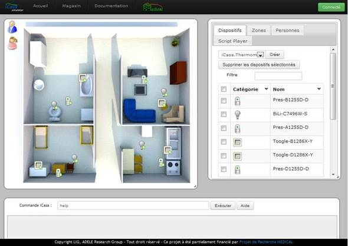

Contact
50, rue Barthélémy de Laffemas
CS 10054
26902 Valence Cedex 09 - France
+33 (0)4 75 75 93 98
stephanie.chollet at grenoble-inp.fr
Research interests
- Pervasive Computing
- Software Engineering (architecture and components)
- Security for Pervasive Applications
- Service-Oriented Computing
- Model-Driven Engineering
- Autonomic Computing
Positions
- Since 09/2011
- Associate Professor at Grenoble INP - Esisar/LCIS
- 2010-2011
- Post-doc at G2ELab
- 2009-2010
- ATER at Grenoble INP - Ensimag
- 2006-2009
- PhD Student at LIG/Adele Team
Publications
DBLP Google scholarBook chapters
- Philippe Lalanda, Stéphanie Chollet, Catherine Hamon. Leveraging Design and Runtime Architecture Models to Support Self-Awareness in Self-Aware Computing Systems, published by Springer International Publishing, edited by Samuel Kounev, Jeffrey O. Kephart, Aleksandar Milenkoski et Xiaoyun Zhu, 2017, p. 669-686. https://link.springer.com/chapter/10.1007/978-3-319-47474-8_24
- Aurélien Faravelon, Stéphanie Chollet. Access Control in Service Compositions: Challenges and Solution Architecture in Service-Driven Approaches to Architecture and Enterprise Integration, published by IGI Global, edited by Raja Ramanathan and Kirtana Raja, June 2013, p. 165-187.
- Stéphanie Chollet, Philippe Lalanda. A Model-Driven Approach to Service Composition with Security Properties in Service Life Cycle Tools and Technologies: Methods, Trends and Advances, published by IGI Global, edited by Pr. Jonathan Lee, Pr. Shang-pin Ma and Pr. Alan Liu, November 2011, p.154-174.
- Stéphanie Chollet, Philippe Lalanda, Jonathan Bardin. Service-Oriented Computing: from Web Services to Service-Oriented Components in Service Life Cycle Tools and Technologies: Methods, Trends and Advances, published by IGI Global, edited by Pr. Jonathan Lee, Pr. Shang-pin Ma and Pr. Alan Liu, November 2011, p. 1-20.
- Philippe Lalanda, Johann Bourcier, Jonathan Bardin, Stéphanie Chollet. Smart home Systems in Smart home Systems, chapiter I, published by Intech, edited by Mahmoud A. Al-Qutayri, February 2010. http://sciyo.com/articles/show/title/smart-home-systems ISBN : 978-953-307-050-6
International journal papers
- Cyril Bresch, David Hély, Roman Lysecky, Stéphanie Chollet, Ioannis Parissis. TrustFlow-X: A Practical Framework for Fine-Grained Control Flow Integrity in Critical Systems in ACM Transactions on Embedded Computing Systems 19(5) (2020). https://dl.acm.org/doi/10.1145/3398327
- Philippe Lalanda, Denis Morand, Stéphanie Chollet. Autonomic Mediation Middleware for Smart Manufacturing in IEEE Internet Computing 21(1): 32-39 (2017)
French journal papers
- Stéphanie Chollet, Vincent Lestideau, Denis Morand, Yoann Maurel, Philippe Lalanda. Auto-réparation et auto-optimisation des applications pervasives – Un gestionnaire de sélection de dépendances de services basé sur l’Analyse de Concepts Formels. Technique et Science Informatique 33(1-2): 7-30 (2014).
- Stéphanie Chollet, Philippe Lalanda. Orchestration de services hétérogènes et sécurisés dans un environnement dynamique – Une approche dirigée par les modèles. Ingénierie des Systèmes d’Information 16(2): 127-150 (2011), édité par Philippe Ramadour.
International conferences
With proceeding committee and publication
- Jonathan Coignard, Vincent Debusschere, Gilles Moreau, Stéphanie Chollet, Raphaël Caire. Distributed Resource Coordination in the Context of European Energy Communities. In 2020 IEEE PES General Meeting, Montréal, Québec, Canada, August 2-6, 2020, IEEE.
- Cyril Bresch, David Hély, Stéphanie Chollet, Ioannis Parissis. TrustFlow: A Trusted Memory Support for Data Flow Integrity. In Proceedings of the 2019 IEEE Computer Society Annual Symposium on VLSI (ISVLSI), p. 308-313, July 15-17, 2019, Miami, FL, USA, IEEE.
- Cyril Bresch, Stéphanie Chollet, David Hély. Towards an Inherently Secure Run-Time Environment for Medical Devices. In Proceedings of the 2018 IEEE International Congress on Internet of Things (ICIOT), p. 140-147, July 2-7, 2018, San Francisco, CA, USA, IEEE Computer Society.
- Philippe Lalanda, Eva Gerbert-Gaillard, Stéphanie Chollet. Self-Aware Context in Smart Home Pervasive Platforms. In Proceedings of the 2017 IEEE International Conference on Autonomic Computing (ICAC), p. 119-124, 2017, July 17-21, Columbus, OH, USA, 2017, IEEE Computer Society.
- Eva Gerbert-Gaillard, Stéphanie Chollet, Philippe Lalanda. Model-Driven Approach for Self-Aware Pervasive Systems. In Proceedings of the 15th IEEE/ACIS International Conference on Computer and Information Science (ICIS) 2016, p. 1-6, June 26-29, 2016, Okayama, Japan, IEEE Computer Society.
- Philippe Lalanda, Stéphanie Chollet, Catherine Hamon, Vincent Lestideau. Architectural Models to Simplify Administration of Service-Oriented Applications. In Proceedings of the IEEE International Conference on Services Computing (SCC) 2016, p. 259-266, June 27 – July 2, 2016, San Francisco, CA, USA, IEEE Computer Society.
- Colin Aygalinc, Eva Gerbert-Gaillard, Germán Vega, Philippe Lalanda, Stéphanie Chollet. Autonomic Service-Oriented Context for Pervasive Applications. In Proceedings of the IEEE International Conference on Services Computing (SCC) 2016, p. 259-266, June 27 – July 2, 2016, San Francisco, CA, USA, IEEE Computer Society.
- Rania Ben Hadj, Stéphanie Chollet, Philippe Lalanda, Catherine Hamon. Sharing Devices between Applications with Autonomic Conflict Management. In Proceedings of the 2016 IEEE International Conference on Autonomic Computing (ICAC), pages 219-220, July 17-22, Würzburg, Germany, IEEE Computer Society.
- Stéphanie Chollet, Philippe Lalanda. Extension of Service-Oriented Component Models for Dynamic Environment. In Proceedings of the 12th IEEE International Conference on Services Computing (SCC), June 27- July 2, 2015, New York, NY, USA, pages 648-655, IEEE Computer Society.
- Philippe Lalanda, Stéphanie Chollet, Aygalinc Colin, Gerbert-Gaillard Eva. Service-Based Architecture and Frameworks for Pervasive Health Applications. In Proceedings of the 20th IEEE International Conference on Emerging Technology and Factory Automation (ETFA), September 8-11, 2015, Luxembourg, Luxembourg, September 9, 2015, pages 1-8, IEEE.
- Stéphanie Chollet. Self-Adaptation of Service Bindings based on Formal Concept Analysis. In Proceedings of the 12th IEEE International Conference on Autonomic Computing (ICAC), July 07-10, 2015, Grenoble France.
- Philippe Lalanda, Stéphanie Chollet, Clément Escoffier, Denis Morand. Dynamic Collection of Data in Complex, Physical Environment. In Proceedings of the 19th IEEE International Conference on Emerging Technology and Factory Automation (ETFA), September 16-19, 2014, Barcelona, Spain, pages 1-4, IEEE.
- Philippe Lalanda, Stéphanie Chollet, Etienne Gandrille, Catherine Hamon. Maintaining Traceability Links between Design and Runtime Architectures to support Autonomic Management. In Proceedings of the 19th IEEE International Conference on Emerging Technology and Factory Automation (ETFA), September 16-19, 2014, Barcelona, Spain, pages 1-6, IEEE.
- Clément Escoffier, Stéphanie Chollet, Philippe Lalanda. Lessons Learned in Building Pervasive Platforms. In Proceedings of the 11th Consumer Communications and Networking Conference (CCNC), p. 203-208, January 10-13, 2014, Las Vegas, NV, USA, IEEE Computer Society. Best Conference Paper Award
- Aurélien Faravelon, Stéphanie Chollet, Christine Verdier, Agnès Front. Configuring Private Data Management as Access Restrictions : From Design to Enforcement. In Proceedings of the 10th International Conference on Service Oriented Computing (ICSOC 2012), p.344-358, November 12-16, 2012, Shanghai, China, Springer, Lecture Notes in Computer Science.
- Yoann Maurel, Stéphanie Chollet, Vincent Lestideau, Jonathan Bardin, Philippe Lalanda, André Bottaro. fANFARE : Autonomic Framework for Service-based Pervasive Environment. In Proceedings of the 2012 IEEE International Conference on Services Computing (SCC 2012), p. 65-72, June 24-29, 2012, Honolulu, HI, USA, IEEE Computer Society.
- Stéphanie Chollet, Vincent Lestideau, Yoann Maurel, Etienne Gandrille, Philippe Lalanda, Olivier Raynaud. Practical Use of Formal Concept Analysis in Service-Oriented Computing. In Proceedings of the 10th International Conference on Formal Concept Analysis (ICFCA 2012), p. 61-76, May 6-10, 2012, Leuven, Belgium, Springer, Lecture Notes in Computer Science.
- Stéphanie Chollet, Vincent Lestideau, Philippe Lalanda, Yoann Maurel, Pierre Colomb, Olivier Raynaud. Building FCA-Based Decision Trees for the Selection of Heterogeneous Services. In Proceedings of the 2011 IEEE International Conference on Services Computing (SCC 2011), p.616-623, July 4-9, 2011, Washington, DC, USA, IEEE Computer Society.
- Stéphanie Chollet, Vincent Lestideau, Philippe Lalanda, Diana Moreno-Garcia, Pierre Colomb. Heterogeneous Service Selection based on Formal Concept Analysis. In 2010 6th World Congress on Services (SERVICES 2010), pages 367-374, Washington, DC, USA, July 2010. IEEE Computer Society.
- Stéphanie Chollet, Philippe Lalanda. An Extensible Abstract Service Orchestration Framework. In Proceedings of the 2009 IEEE International Conference on Web Services (ICWS 2009), p. 831-838, July 6-10, 2009, Los Angeles, CA, USA, IEEE Computer Society.
- Stéphanie Chollet, Philippe Lalanda. Security Specification at Process Level. In Proceedings of the 2008 IEEE International Conference on Services Computing – Volume 1 (SCC 2008), p. 165-172, July 8-11, 2008, Honolulu, HI, USA, IEEE Computer Society.
- Jianqi Yu, Philippe Lalanda, Stéphanie Chollet. Development tool for service-oriented applications in smart homes. In Proceedings of the 2008 IEEE Internation Conference on Services Computing – Volume 2 (SCC 2008), p. 239-246, July 8-11, 2008, Honolulu, HI, USA, IEEE Computer Society.
- Stéphanie Chollet, Philippe Lalanda, André Bottaro. Transparently Adding Security Properties to Service Orchestration – In Proceedings of the 22nd International Conference on Advanced Information Networking and Applications (AINA), pages 1363-1368, Washington, DC, USA, March 2008. IEEE Computer Society. Best Paper Award
French conference
With proceeding committee and publication
- Stéphanie Chollet, Philippe Lalanda, Catherine Hamon. Maintien de la cohérence entre les architectures pour une gestion autonomique de systèmes pervasifs. Dans les Actes du XXXIIIème Congrès INFORSID, p. 183-198, Mai 26-29, 2015, Biarritz, France.
International workshops
With proceeding committee and publication
- Stéphanie Chollet, Laurent Pion, Nicolas Barbot, Clément Michel. Secure IoT for Pervasive Platform. In Proceedings of the 2018 IEEE International Conference on Pervasive Computing and Communications Workshops, PerCom Workshops 2018 – 6th Workshop on Context Systems Design, Evaluation and Optimization (CoSDEO 2018), p. 113-118, March 19-23, 2018, Athens, Greece, IEEE Computer Society.
- Rania Ben Hadj, Catherine Hamon, Stéphanie Chollet, Germán Vega, Philippe Lalanda. Context-based Conflict Management in Pervasive Platforms. In Proceedings of the 2017 IEEE International Conference on Pervasive Computing and Communications Workshops, PerCom Workshops 2017 – 13th Workshop on Context and Activity Modeling and Recognition (CoMoRea’17), p. 250-255, March 13-17, 2017, Kona, Big Island, HI, USA, IEEE Computer Society.
- Eva Gerbert-Gaillard, Philippe Lalanda, Stéphanie Chollet, Jérémie Demarchez. A Self-Aware Approach to Context Management in Pervasive Platforms. In Proceedings of the 2017 IEEE International Conference on Pervasive Computing and Communications Workshops, PerCom Workshops 2017 – 13th Workshop on Context and Activity Modeling and Recognition (CoMoRea’17), p. 256-261, March 13-17, 2017, Kona, Big Island, HI, USA, IEEE Computer Society.
- Colin Aygalinc, Eva Gerbert-Gaillard, Germán Vega, Philippe Lalanda, Stéphanie Chollet. A Model-based Approach to Context Management in Pervasive Platforms. In Proceedings of the 2016 IEEE International Conference on Pervasive Computing and Communications Workshops, PerCom Workshops 2016 – 12th Workshop on Context and Activity Modeling and Recognition (CoMoRea’16), p. 1-6, March 14-18, 2016, Sydney, Australia, IEEE Computer Society.
- Philippe Lalanda, Stéphanie Chollet, Catherine Hamon. Linked models@runtime to ease administration of Pervasive Applications. In Proceedings of the 2016 IEEE International Conference on Pervasive Computing and Communications Workshops, PerCom Workshops 2016 – 13th International Workshop on Managing Communications and Services (MUCS 2016), p. 1-6, March 14-18, 2016, Sydney, Australia, IEEE Computer Society.
- John McDonald, Hélène Decroix, Raphaël Caire, José Sanchez, Stéphanie Chollet, Nouha Ouhala, Armand Puccetti, Arthur Hecker, Claude Chaudet, Henri Piat, Daniel Georges, Frédéric Planchon. The SINARI project: Security Analysis and Risk Assessment Applied to the Electrical Distribution Network. In 22nd International Conference on Electricity Distribution (CIRED 2013), June 10-13, Stockholm, Sweden.
- Aurélien Faravelon, Stéphanie Chollet, Christine Verdier, Agnès Front. Enforcing privacy as access control in a pervasive context. In Proceedings of 2012 IEEE Consumer Communications and Networking Conference (CCNC) – 2nd IEEE International Workshop on Consumer eHealth Platforms, Services and Applications (CeHPSA), p. 380-384, January 14-17, 2012, Las Vegas, NV, USA.
- Stéphanie Chollet, Philippe Lalanda, Gabriel Pedraza. Secure Integration of Service-Oriented Application. In International Workshop on the Future Internet Things and Services – Embedded Web Services for Pervasive Devices, September 1-3, 2009, Berlin, Germany.
Teaching
Software Engineering
Master 1: 4A EIS & 4A IR&C
Aims for students:- Analyze the functional and non-functional requirements
- Elaborate a functional specification
- Design a software architecture
- Carry out test activities
- Choose an appropriate life-cycle for the development process

IoT Applications
Master 2: 5A EIS
